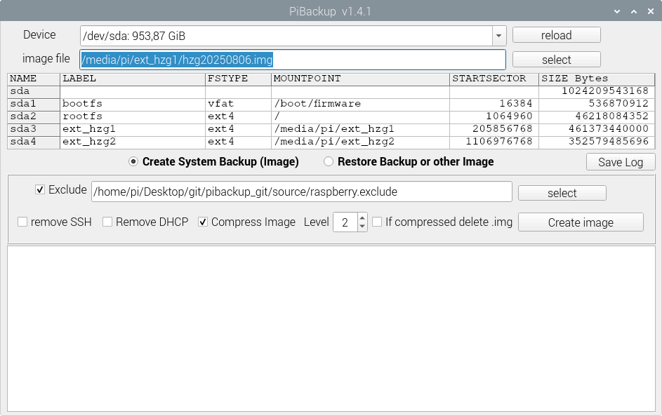

🔧 Main Features & Live Backup for Raspberry Pi & Linux
- Simple graphical user interface – no installation required
- 64-bit Linux application – runs directly
- Automatically backs up the first two partitions (e.g.,
/bootand/root) - Live backup support – backup running systems without shutdown
- Exclude file support for removing unwanted data and folders
- Optional removal of SSH and DHCP configs from the backup
- Image is shrunk to reduce space, then compressed using zstd
- Compressed backups are saved as
.img.zst(optional) - Empty sectors are filled with
0xFFto improve compression and security - Compatible with SD cards, SSDs, HDDs, and other block devices
🔁 Restore Options & Live Backup Support (Raspberry Pi & Linux)
- Restore from
.imgor.img.zstdirectly – no manual steps - Restore only system partitions (e.g.,
/bootand/root) – other partitions remain intact - Target device selection via dropdown menu
- Partition size adjustable via scrollbar or slider
- Live preview of planned partition layout (grid view)
- Selective partition deletion (optional)
- File system auto-resized to fit the new partition size
📷 Screenshot
This is how the pibackup graphical user interface looks.
📦 Download & Source Code
Visit the GitHub repository to download the latest version, report issues, or contribute:
GitHub Project💬 Contact
Have questions or feedback? Feel free to open an issue on GitHub.